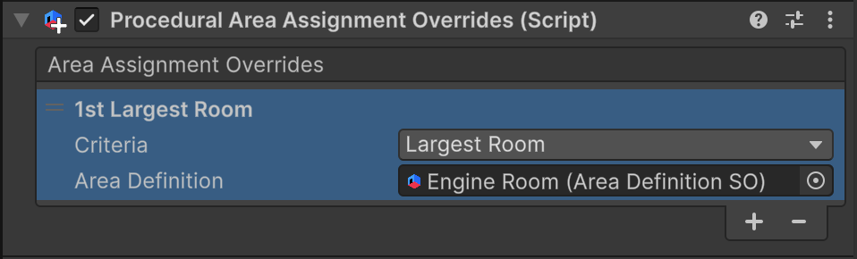

Procedural Area Assignment Overrides
The ProceduralAreaAssignmentOverrides component lets you assign AreaDefinitions to rooms or corridors using various criteria before the normal map generation process assigns areas randomly.
This component must be on the same object as your MoraMapGen component in order to be applied.
Add Area Assignment Overrides

When you add a new item to the list, you will first need to select the Criteria you want to use, and then assign an AreaDefinitionSO asset. When the map is generated, the first available area matching your selected criteria will be assigned the AreaDefinition you specified.
Some criteria will expose additional required parameters such as ID, Size, or Other Area.
Criteria
| Criteria | Description |
|---|---|
LargestRoom, LargestCorridor |
Select the room or corridor with the most grid spaces. |
SmallestRoom, SmallestCorridor |
Select the room or corridor with the fewest grid spaces. |
Room With Most Doors, Corridor With Most Doors |
Select the room or corridor with the greatest number of door spots. |
Room With Least Doors, Corridor With Least Doors |
Select the room or corridor with the fewest number of door spots. |
Corridor With Most Dead Ends |
Select the corridor with the greatest number of dead ends. |
Arbitrary Room Id, Arbitrary Corridor Id |
Select the room or corridor with the specified generated ID. |
All Rooms Of Size Or Smaller, All Corridors Of Size Or Smaller |
Select every room or corridor whose grid-space count is at or below the Size value. |
Room Farthest From Other Area, Corridor Farthest From Other Area |
Select a room or corridor as far as possible from an area using the Other Area definition. If the Other Area doesn't exist yet because it hasn't been assigned by a prior override, then two of the remaining available areas which are farthest apart will be used for both AreaDefinitions. |
Satisfying "Required" and "Unique" Areas
If your AreaOptionsSO asset has any "Required" and/or "Unique" room or corridor definitions, and an Area Assignment Override places the area, it satisfies the requirement, and/or counts as ther unique instance. When the normal area assignment takes over to assign the remaining areas, it won't duplicate the area.